很多朋友喜欢补钙，但补钙是要特别讲究方法的，如果补得不得法，盲目地吃钙片，身体不仅不一定吸收，还有可能引起结石。补钙最好还是通过饮食来让身体吸收钙元素，这样比较安全、可靠。
有一样天然的钙片——萝卜缨，就是萝卜的茎和叶。
为什么说萝卜缨是天然的钙片？因为100克的萝卜缨含150~350毫克的钙，这种含钙量在蔬菜类中可以说是名列前茅的，甚至超过了牛奶和豆浆。
有些人总觉得补钙要吃动物性制品，其实植物中也是含有天然钙的，吃蔬菜同样也能补钙。
在早春，我给大家推荐的春盘里面就有萝卜缨，它跟其他季节出产的不一样，是属于秉冬春之气的一种蔬菜。萝卜在冬天采收，植物的营养都回流到了根部，所以冬天的萝卜很好吃；到了春天，阳光一照，萝卜开始发芽，长叶子，这就叫秉冬气而得春阳。
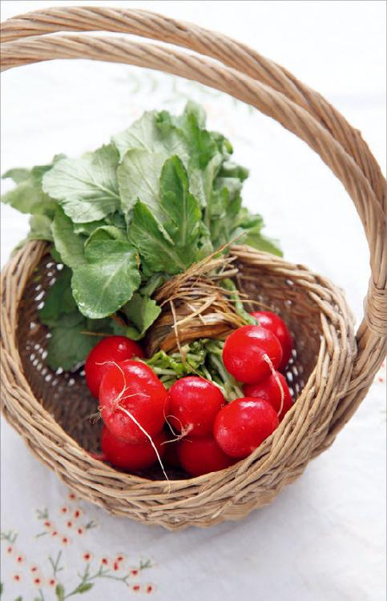
秉冬气而得春阳的蔬菜，在早春吃对身体特别补益，总结为四个字就是“阴阳并济”。冬天的气是属阴的，春天的阳光是属阳的，在早春的时候吃冬天长根而春天又发苗的蔬菜，是可以同时补我们身体的阴阳二气的。早春的萝卜缨就是这种特别有能量的食物。
传统上，我们用萝卜缨来入药的时候也是非常讲究，一定要采摘早春的萝卜缨。
允斌解惑：白萝卜怎么利用好呢？
快乐：白萝卜下气，要少吃，那怎么利用好呢？如果只吃萝卜缨子和白萝卜皮，把挺大的一个白萝卜扔掉，感觉挺可惜的。
允斌：不要这样机械地执行，要分人、分时，且可以搭配其他食材吃。
萝卜缨除了是天然的钙片之外，它还有很特殊的功效。
首先，它具有萝卜的功效，但又跟萝卜有点不一样。萝卜是凉性的，萝卜缨是温性的，萝卜缨的温性是为了平衡萝卜的凉性——一般的天然的食物都是全价营养，是阴阳具足的。
萝卜缨的温性使它在绿叶蔬菜中显得尤为可贵，因为大多数的绿叶蔬菜都是凉性的，温性的绿叶蔬菜不太多，而温性又不上火的绿叶蔬菜就更难得了。比如，韭菜虽然也是温热的，但在春夏之交吃它，容易使人上火，吃萝卜缨则不会，不仅不会使人上火，还有降血压的功效。
春天也是一些人血压容易升高的季节，在开春的时候，多吃一些萝卜缨对于降血压是很有好处的。
早春的时候要注意抗病毒，萝卜缨就能抗呼吸系统的病毒。
萝卜缨对一切咽喉部位的问题都有作用。假如我们平时在生活中，特别是在早春，感觉到咽喉部位有任何的不舒服，比如，咽炎、咽喉肿痛、扁桃腺发炎，以及感冒发热后的咳嗽、痰多、嗓子哑等春季常见的问题，都可以考虑在饮食中加一点萝卜缨来辅助调理。
还有一些不是咽喉的问题，而是喉咙部位有病症，也可以用萝卜缨来调理。比如，有的朋友会突然无缘无故地打嗝，这时您可以用萝卜缨煮水来喝，萝卜缨有理气的作用，喝后就不会打嗝了。还有的朋友胃热，会反酸，这时候也要用到萝卜缨。
萝卜缨能化解肠胃的浊气，因为肠胃特别容易积滞，再加上现在的人普遍吃得比较丰盛，如果您吃完饭以后觉得不消化、肚子胀，甚至有的朋友只要吃了油腻的就会拉肚子，在早春的时候，都可以用萝卜缨来调理。
一些小朋友很容易食积，一食积就会咳嗽、痰多，这都是消化不良造成的，可以给孩子用一些萝卜缨。
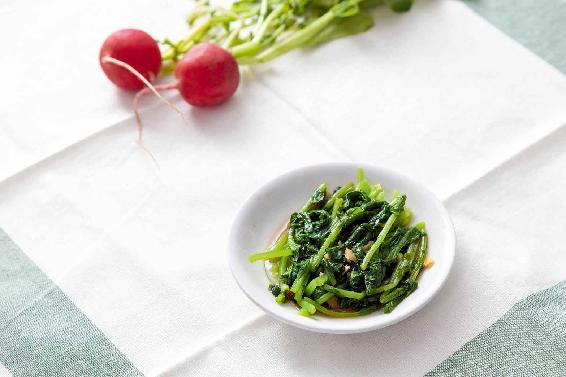
春天来了，要把脾胃功能打开，就可以用到萝卜缨。萝卜缨是开胃消食的好东西，小孩子平时胃口不好，一年四季有不同的调理方法，而在春天就用萝卜缨。
有些朋友可能会想，一个菜市场上被大家扔了不要的东西需要讲这么多吗？其实在日常生活中，往往是这些边角余料对身体最有好处，但也最容易被人忽视。我们要有一双慧眼，这样才会发现身边处处皆良药。
初春的时候，我们应该多吃一些蔬菜来给身体排毒，但用老话讲，这时候是一个青黄不接的季节，市场上卖的大多数都是大棚菜，真正地里长的应季菜确实不太多，所以萝卜缨就显得尤为可贵。
在早春，您可以尝试以下几种方法来得到萝卜缨。
1.在菜市场买萝卜的时候，把萝卜缨留下来
您可以在菜市场买萝卜的时候，把萝卜缨留下来。可能市场上有些萝卜没有缨了，那是菜贩把萝卜缨给切掉了，但您可以跟菜贩提前说，请他下一次给你留几个带缨的萝卜。
有一次我在高原上，见到一种紫皮的萝卜，觉得非常好。现场卖萝卜的农民很有意思，他把萝卜缨子全都给削掉了，还削得特别实在，连靠近萝卜缨的部分都给削掉了，所以每一个萝卜看起来都是秃头的，被切去了一半，他可能觉得这样削大家会觉得很实惠。
我就问他：“您的麻袋里还有没有带缨子的萝卜？”
他说：“有啊。”
我说：“那您把带缨子的萝卜拿出来，我要称这些。”他拿出来后的第一个动作就是拿刀准备把缨子给削掉。我说：“您不要削，我要的就是带缨子的萝卜。”
2.自己在家发萝卜缨
我们平时在家里做菜时，切下来的萝卜头不要扔掉，您把切口朝下放在盘子里，再倒一点点清水，隔一两天加一次水，始终保持盘子里有一点水的状态。几天以后，您就会看到萝卜顶部发出新芽，叶子很快就会长起来，这时就可以吃了。
记住：不要等叶子长得太长，否则就长老了。但如果您想作为观赏植物，是可以让它一直长的，萝卜叶子长着长着就会抽薹、开花了。
我在家里曾经试验过，萝卜花有白色的，有紫色的，可以当作盆景欣赏。
3.自己种萝卜苗
种萝卜苗其实跟发豆芽是一样的，区别在于，种萝卜苗用的是土，发豆芽用的是水。
怎么种呢？
我们可以在市场上或者是种子商店买萝卜籽，回家后把萝卜籽撒在装有土壤的花盆里，然后用水一次性浇透。以后每天浇一点点水，保持土壤湿润，等到长出小苗以后，就可以吃了。
萝卜籽的生命力是非常顽强的，撒到土壤里就能长。这种小苗跟萝卜缨子的功效有一点点区别，就是它降血压的效果特别好。
我建议老年朋友不妨在种花种草的同时，腾出一两个花盆来种一点萝卜苗，虽然它的味道有一点点辛，但不是辛辣的辛，是有一点点辛香，味道还是不错的。
下面我给您介绍两个萝卜缨的小食方。一个是专门治感冒痊愈后胃口不开的，一个是专门治疗伤食咳嗽的。
感冒以后如果感觉头痛，特别是前额痛，这就说明寒还没有完全散掉。特别是伴有胃口不开，觉得吃什么嘴里都很淡、没有味的时候，您吃这个是很有效果的。
其实，有时候感冒了，觉得体内有风寒，闻一闻这道菜的味道，打几个喷嚏，就会觉得寒气散掉一半。
这是一道有点辣味的菜，如果您不能吃辣，炝锅时就只放一点点花椒。花椒能散寒祛湿，对于感冒后的胃口不开是很有好处的。因此，这道菜炝锅的辣椒可以不要，但花椒最好不要去掉。
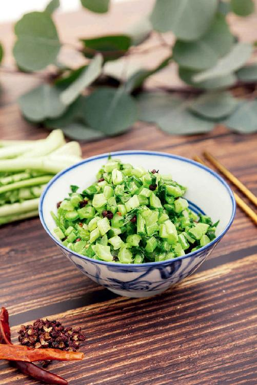
炝炒萝卜老秆
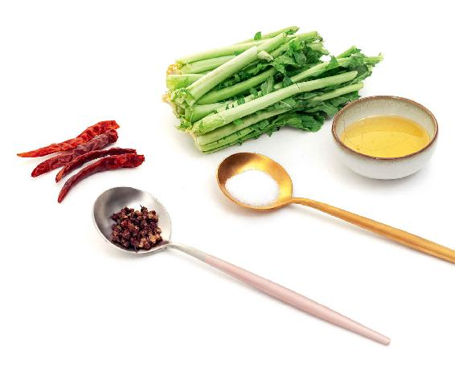
原料：萝卜老秆、干辣椒、花椒。
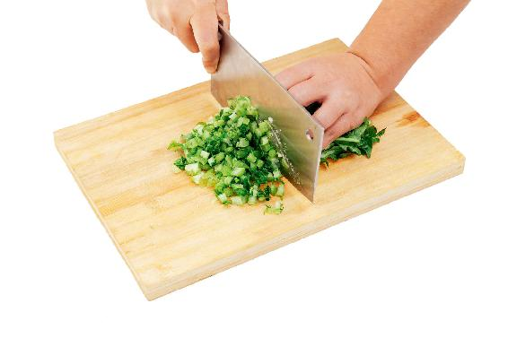
做法：
1. 把萝卜秆切碎，用盐腌10分钟左右。
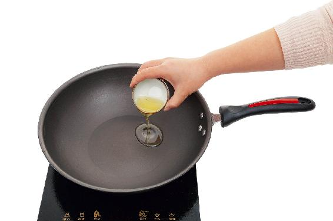
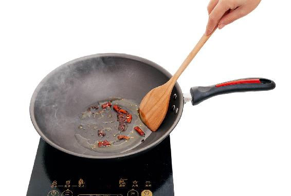
2. 锅里放一点点油，把两个切碎的干辣椒和花椒放入，炝一下锅。
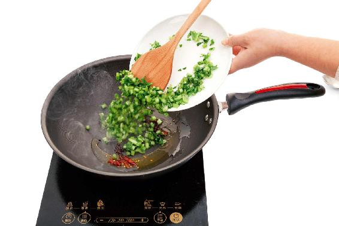
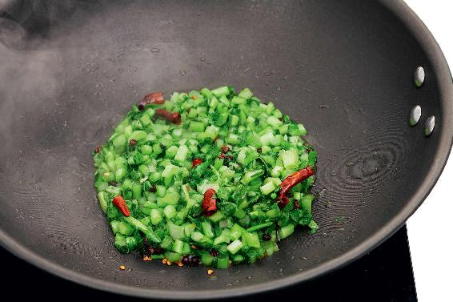
3. 把切碎的萝卜秆放入锅内并快速翻炒，大约两分钟后起锅。
功效：这道菜用来配粥吃是很好的，能够发散风寒。
凉拌萝卜缨是专门治疗伤食咳嗽的，也很适合小朋友来吃。
市场上的樱桃小萝卜，它是带着长长的缨子来卖的，绿绿的、红红的，很漂亮。有些朋友在吃樱桃小萝卜的时候，觉得叶子吃起来有点粗糙，就把叶子揪下来扔了，只蘸酱吃小萝卜，这样太可惜了。
其实，我们可以把叶子单独切下来，另外做一个小凉菜。
什么是伤食咳嗽呢？就是人在暴饮暴食之后，加上受点风，一着凉，就容易咳嗽。
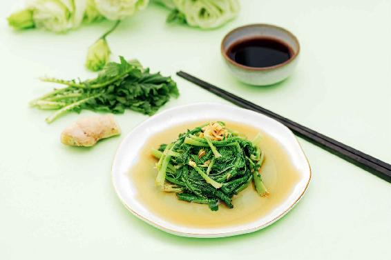
凉拌萝卜缨
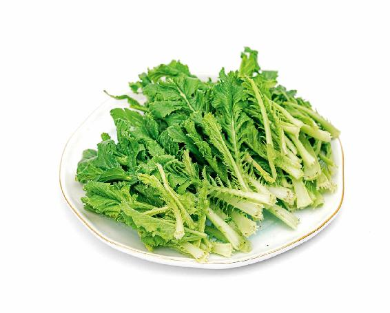
原料：樱桃小萝卜的缨子，糖、盐、醋。
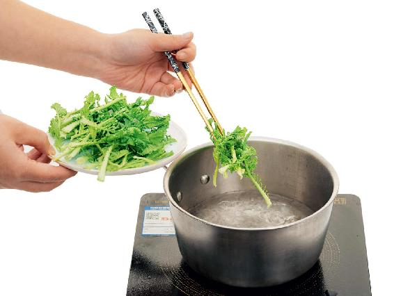
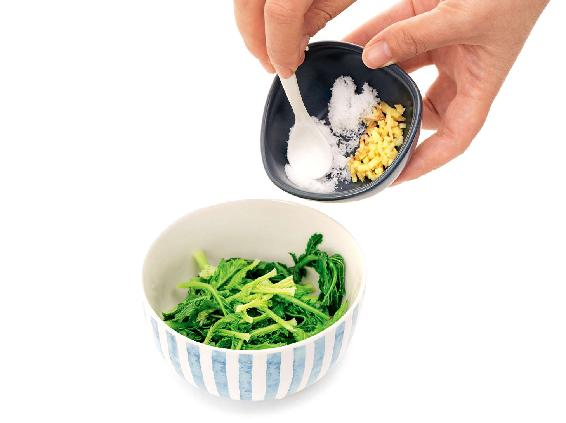
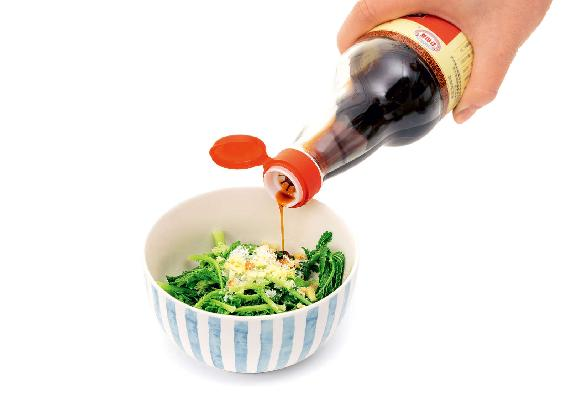
做法：把樱桃小萝卜的缨子在开水锅里快速焯一下捞出，然后切一点姜末，加一点糖、盐、醋，给它一拌，凉菜就做成了，味道特别好。
功效：化痰止咳，调理小朋友、年轻人伤食以后引起的咳嗽、痰多，效果是很好的。
这种咳嗽，一般来说晚上咳得比较厉害，很多孩子半夜里总咳，让家长非常担心。这种晚上加重的咳嗽，如果痰也很多，那就可以吃这道菜。如果是十多岁的小孩，凉菜里可以多加一点姜末，这样效果会更好。
我经常说，老天爷是非常公平的，萝卜虽然很好，但它有点偏凉性，所以老天爷就让萝卜缨长成温性的，来平衡萝卜的凉性。
我们在吃任何天然食物的时候，真的不要辜负大自然的良苦用心，如果吃萝卜不吃缨子，那我们就等于损失了一半的营养。
其实，只要我们稍微花一点心思来做家常便饭，有些菜的边角余料都有可能变成治病的良药。
读者评论：萝卜缨汆丸子特别好吃
一丹_k7：萝卜缨汆丸子特别好吃！喜欢。